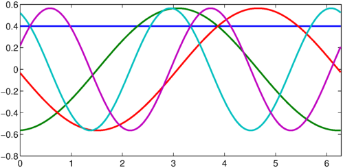
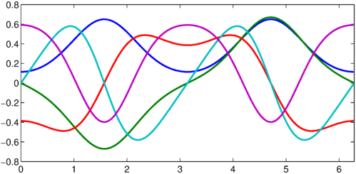

LW = 'linewidth'; dom = [0 2*pi];
Consider the periodic Sturm`-Liouville eigenvalue problem
$$ -\frac{d}{dx}\Big[p(x)\frac{du}{dx}\Big]+q(x)u=\lambda w(x)u, $$
on $[0,2\pi]$, where $w(x)>0$ and $q(x)$ are periodic and continuous complex-valued functions, and $p(x)>0$ is a periodic ontinuously differentiable complex-valued function. We look for complex eigenvalues $\lambda$, and peridoic complex-valued functions $u(x)$ with two continuous derivatives.
The spectral theorem for periodic Sturm-Liouville eigenvalue problem [1, Theorem 5.28] states that there exists a basis of periodic and real-valued continuous functions on $[0,2\pi]$ that consists of eigenfunctions $u_n(x)$ of the periodic Sturm-Liouville eigenvalue problem. They are orthonormal with respect to the inner product
$$ \int_0^{2\pi}\overline{u_m(x)}u_n(x)w(x)dx, $$
and have real and discrete eigenvalues $\lambda_0<\lambda_1\leq\lambda_2<\lambda_3\leq\lambda_4\ldots$, of multiplicity at most two for $n\geq1$ and one for $n=0$, with $\lambda_n\rightarrow\infty$ as $n\rightarrow\infty$. Moreover, let $\Delta$ be the Hill discriminant defined by
$$ \Delta = \frac{c(2\pi) + p(2\pi)s'(2\pi)}{2}, $$
where $c(x)$ and $s(x)$ are the solutions of the Sturm-Liouville equations with initial conditions $c(0)=1$, $p(0)c'(0)=0$ and $s(0)=0$, $p(0)s'(0)=1$. The eigenvalues $\lambda_n$ correspond to $\Delta=1$.
Let us first review two famous examples.
If $p(x)=w(x)=1$, $q(x)=0$, on $[0,2\pi]$, we obtain
$$ -u'' = \lambda u, $$
with eigenfunctions $A\cos(\sqrt{\lambda_n}x)+B\sin(\sqrt{\lambda_n}x)$, and discrete and real eigenvalues $\lambda_n=n^2,n\geq0$, double for $n\geq1$ and simple for $n=0$. We can solve it in Chebfun as follows with the eigs command.
L = chebop(@(u) -diff(u, 2), dom); L.bc = 'periodic'; k = 5; % number of eigenvalues we want [V, D] = eigs(L, k); D = diag(D); figure, plot(V, LW, 2)

The computed eigenvalues are very close to the exact ones:
Dexact = [0 1 1 4 4]'; norm(D - Dexact, inf)
ans =
2.993161274389422e-13
The eigenfunctions are periodic
V{1:end}
ans =
chebfun column (1 smooth piece)
interval length endpoint values periodic
[ 0, 6.3] 5 0.4 0.4
Epslevel = 1.000000e-10. Vscale = 3.989423e-01.
ans =
chebfun column (1 smooth piece)
interval length endpoint values periodic
[ 0, 6.3] 5 -0.56 -0.56
Epslevel = 1.000000e-10. Vscale = 5.632210e-01.
ans =
chebfun column (1 smooth piece)
interval length endpoint values periodic
[ 0, 6.3] 5 -0.033 -0.033
Epslevel = 1.000000e-10. Vscale = 5.458664e-01.
ans =
chebfun column (1 smooth piece)
interval length endpoint values periodic
[ 0, 6.3] 5 0.52 0.52
Epslevel = 1.000000e-10. Vscale = 5.495700e-01.
ans =
chebfun column (1 smooth piece)
interval length endpoint values periodic
[ 0, 6.3] 5 0.22 0.22
Epslevel = 1.000000e-10. Vscale = 5.621038e-01.
and satisfy the differential equation to high precision:
norm(L*V - D.'.*V, inf)
ans =
2.441382023106272e-13
If $p(x)=w(x)=1$, $q(x)=2q\cos(2x)$, we obtain the Mathieu equations
$$ -u'' + 2q\cos(2x)u = \lambda u. $$
They have been studied by the French mathematician Emile Mathieu to model the vibrations of elliptical drumheads [2]. Given $q\neq 0$, the eigenvalues $\lambda(q)$ associated with periodic eigenfunctions are called the characteristic values of the Mathieu equations. It can be shown that there exists a countably infinite set of real characteristic values $\lambda_n(q),n\geq0$, double for $n\geq1$ and simple for $n=0$, with elliptic cosine and sine eigenfunctions, the Mathieu functions.
q = 2; L = chebop(@(x, u) -diff(u, 2) + 2*q*cos(2*x).*u, dom); L.bc = 'periodic'; k = 5; % number of eigenvalues we want [V, D] = eigs(L, k); D = diag(D); figure, plot(V, LW, 2)

The computed eigenvalues are very close to the eigenvalues obtained with WolframAlpha:
Dwolfram = [ -1.513956885056520;
-1.390676501225323;
2.379199880488686;
3.672232706497191;
5.172665133358294 ];
norm(D - Dwolfram, inf)
ans =
3.361755318564974e-13
Again, the eigenfunctions are periodic
V{1:end}
ans =
chebfun column (1 smooth piece)
interval length endpoint values periodic
[ 0, 6.3] 29 0.11 0.11
Epslevel = 1.000000e-10. Vscale = 6.469300e-01.
ans =
chebfun column (1 smooth piece)
interval length endpoint values periodic
[ 0, 6.3] 29 5.1e-14 5.1e-14
Epslevel = 1.000000e-10. Vscale = 6.678125e-01.
ans =
chebfun column (1 smooth piece)
interval length endpoint values periodic
[ 0, 6.3] 29 -0.39 -0.39
Epslevel = 1.000000e-10. Vscale = 4.871346e-01.
ans =
chebfun column (1 smooth piece)
interval length endpoint values periodic
[ 0, 6.3] 29 -2.8e-14 -2.8e-14
Epslevel = 1.000000e-10. Vscale = 5.773752e-01.
ans =
chebfun column (1 smooth piece)
interval length endpoint values periodic
[ 0, 6.3] 29 0.59 0.59
Epslevel = 1.000000e-10. Vscale = 5.917415e-01.
and satisfy the differential equation to high precision:
norm(L*V - D.'.*V, inf)
ans =
6.625597141132941e-09
References
[1] G. Teschl, Ordinary Differential Equations and Dynamical Systems, Graduate Studies in Mathematics, American Mathematical Society, Providence RI, 2012.
[2] E. Mathieu, Memoire sur le mouvement vibratoire d'une membrane de forme elliptique, Journal de mathematiques pures et appliquees, 13 (1868), pp. 137--203.